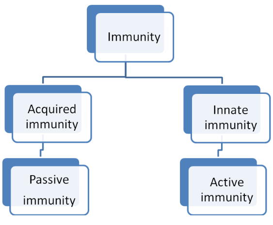

Introduction to Immunization
🎯 Learning Objectives
- Define immunization and immunity.
- Distinguish between acquired and innate immunity.
- Explain the concepts of active and passive immunity.
- Understand herd immunity.
📚 Definitions of Terms
Immunization is a process of protecting an individual from a disease through the introduction of a live, killed, or partial component of the invading organism into the individual's system. Immunity is acquired after the administration of an antigen in the form of vaccination by the production of antibodies within the body. The body is then immune to the effects of the intended pathogens.
Immunization is also the process by which resistance to an infectious disease is produced or augmented. It is the act of creating immunity by artificial means.
Immunity is the ability of the body to recognize, destroy, and eliminate antigenic material foreign to its own. Immunity is classified into two major classifications: acquired and innate immunity.

📚 Types of Immunity
Innate immunity is that which the individual possesses by virtue of their genetic makeup. It is also called racial/natural immunity. For example, certain races may not get particular diseases.
Acquired immunity is the immunity that develops during a person's lifetime. It is further classified into two types:
- Active immunity is the immunity that an individual develops as a result of infection or by specific immunizations. The immunity produced is specific for a particular disease.
- Passive immunity is where antibodies produced in one human being are transferred to another to induce protection against disease. For example, maternal antibodies are transferred to the fetus and the infant via the placenta or breast milk.
📚 Herd Immunity
Herd immunity is the level of immunity of a population to an infectious disease. It depends on the previous infections and immunization procedures experienced by the population. A community is said to have a high level of herd immunity when a high percentage (70%-80%) of its child population has been protected through immunization. An infection introduced into a community with a high level of herd immunity will not spread since most children have immunity and very few are susceptible.
On the other hand, a community with a high percentage of its child population not immunized is said to have a low level of herd immunity and is susceptible to epidemics as the disease will spread quickly among children.
One of the intentions of the Kenyan Expanded Program on Immunization (KEPI) and the division of immunization is to attain high levels of immunization coverage of all children eligible for immunization so as to control and eradicate childhood immunizable diseases.
✍️ Practice Exercise
Explain in your own words the difference between active and passive immunity. Provide an example of each.
View Solution
Active immunity is developed by the body after exposure to an antigen, such as during a natural infection or after vaccination. An example would be the immunity that develops after recovering from measles or after receiving the measles vaccine. Passive immunity is the result of receiving antibodies from another source, such as through maternal antibodies via the placenta or breast milk. An example would be the antibodies passed from a mother to her infant.